Data: face-to-face and proximity contacts
Source:vignettes/articles/data-contact.Rmd
data-contact.RmdWearable sensors record when two people (or animals, or devices) are
close to each other. Each record is an undirected contact between a pair
at a time stamp, usually at a resolution of 20 seconds, so these logs
are dense in time and repeat the same pairs many times. They suit models
of repeated contact, triadic closure and daily rhythms with
mode = "one". The SocioPatterns collection is released
under a Creative Commons Attribution-NonCommercial-ShareAlike licence,
which an MIT-licensed package cannot carry, so none of these datasets
ships with amorem.
The data catalogue lists every dataset with its licence. Figures and numbers on this page are aggregates computed from the files as published; each section links the source and the code that reads it.
SocioPatterns: high school contacts, diaries, friendship, Facebook 2013
Source: https://www.sociopatterns.org/datasets/high-school-contact-and-friendship-networks/ · Licence: CC BY-NC-SA · Status in amorem: non-commercial: not redistributable in amorem (MIT); obtain from the source.
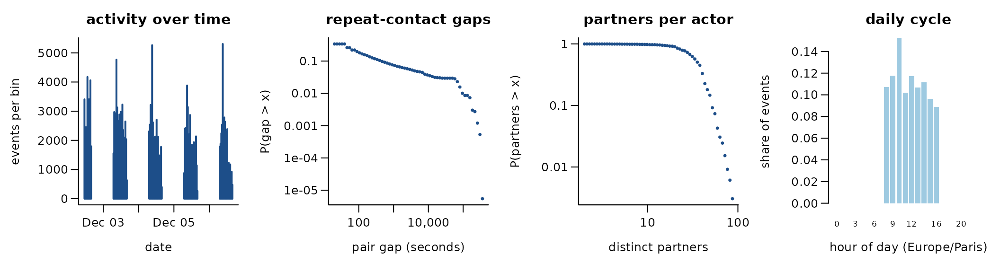
188,508 undirected contacts among 327 actors over 4.2 days (5,818 distinct pairs). 96.9% of events repeat an earlier pair; if every event chose a pair at random the share would be 72.5%. The burstiness coefficient of the gaps between successive events of the same pair is 0.72 (0 for a Poisson process, positive when events cluster in bursts); the most active tenth of the actors take part in 27.0% of events (Gini 0.41). 96.1% of events share their time stamp with an earlier one. Unix time; Lycee Thiers, Marseille, December 2013
Get the data
download.file("https://sociopatterns.org/assets/data/HighSchool2013_contactdiaries_network.csv.gz", "HighSchool2013_contactdiaries_network.csv.gz", mode = "wb")
download.file("https://sociopatterns.org/assets/data/HighSchool2013_facebook_known_pairs.csv.gz", "HighSchool2013_facebook_known_pairs.csv.gz", mode = "wb")
download.file("https://sociopatterns.org/assets/data/HighSchool2013_friendship_network.csv.gz", "HighSchool2013_friendship_network.csv.gz", mode = "wb")
download.file("https://sociopatterns.org/assets/data/HighSchool2013_metadata.txt", "HighSchool2013_metadata.txt", mode = "wb")
download.file("https://sociopatterns.org/assets/data/HighSchool2013_proximity_net.csv.gz", "HighSchool2013_proximity_net.csv.gz", mode = "wb")A reader that turns these files into a
(sender, receiver, time) table is
readers[["sp-highschool-2013"]] in data-raw/catalogue/readers.R.
SocioPatterns: high school contacts 2011 and 2012 (Marseille)
Source: https://www.sociopatterns.org/datasets/high-school-contact-and-friendship-networks/ · Licence: CC BY-NC-SA · Status in amorem: non-commercial: not redistributable in amorem (MIT); obtain from the source.
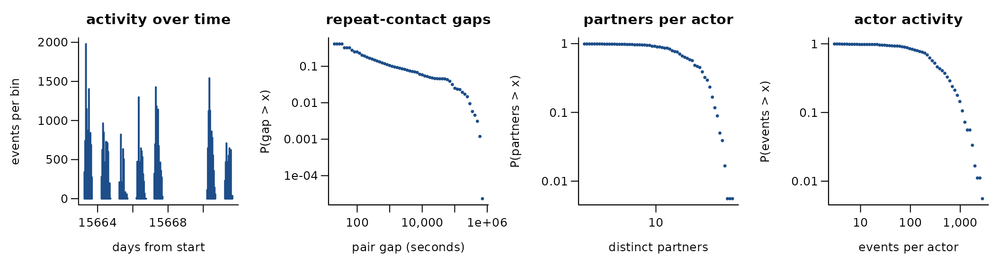
45,047 undirected contacts among 180 actors over 8.4 days (2,220 distinct pairs). 95.1% of events repeat an earlier pair; if every event chose a pair at random the share would be 66.4%. The burstiness coefficient of the gaps between successive events of the same pair is 0.69 (0 for a Poisson process, positive when events cluster in bursts); the most active tenth of the actors take part in 32.9% of events (Gini 0.49). 75.0% of events share their time stamp with an earlier one. 2012 file (180 students, 5 classes); the 2011 file is also in the folder
Get the data
download.file("https://sociopatterns.org/assets/data/highschool_2011.csv.gz", "highschool_2011.csv.gz", mode = "wb")
download.file("https://sociopatterns.org/assets/data/highschool_2011_metadata.txt", "highschool_2011_metadata.txt", mode = "wb")
download.file("https://sociopatterns.org/assets/data/highschool_2012.csv.gz", "highschool_2012.csv.gz", mode = "wb")
download.file("https://sociopatterns.org/assets/data/highschool_2012_metadata.txt", "highschool_2012_metadata.txt", mode = "wb")A reader that turns these files into a
(sender, receiver, time) table is
readers[["sp-highschool-2011-2012"]] in data-raw/catalogue/readers.R.
SocioPatterns: primary school contacts (Lyon)
Source: https://www.sociopatterns.org/datasets/high-school-contact-and-friendship-networks/ · Licence: CC BY-NC-SA · Status in amorem: non-commercial: not redistributable in amorem (MIT); obtain from the source.
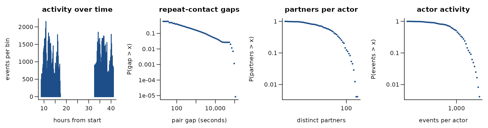
125,773 undirected contacts among 242 actors over 1.4 days (8,317 distinct pairs). 93.4% of events repeat an earlier pair; if every event chose a pair at random the share would be 77.1%. The burstiness coefficient of the gaps between successive events of the same pair is 0.63 (0 for a Poisson process, positive when events cluster in bursts); the most active tenth of the actors take part in 20.4% of events (Gini 0.28). 97.5% of events share their time stamp with an earlier one. two school days, Lyon, October 2009
Get the data
download.file("https://sociopatterns.org/assets/data/primaryschool.csv.gz", "primaryschool.csv.gz", mode = "wb")
download.file("https://sociopatterns.org/assets/data/primaryschool_metadata.txt", "primaryschool_metadata.txt", mode = "wb")A reader that turns these files into a
(sender, receiver, time) table is
readers[["sp-primaryschool"]] in data-raw/catalogue/readers.R.
SocioPatterns: hospital ward contacts (Lyon)
Source: https://www.sociopatterns.org/datasets/high-school-contact-and-friendship-networks/ · Licence: CC BY-NC-SA · Status in amorem: non-commercial: not redistributable in amorem (MIT); obtain from the source.
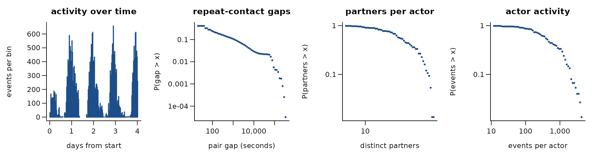
32,424 undirected contacts among 75 actors over 4.0 days (1,139 distinct pairs). 96.5% of events repeat an earlier pair; if every event chose a pair at random the share would be 91.4%. The burstiness coefficient of the gaps between successive events of the same pair is 0.73 (0 for a Poisson process, positive when events cluster in bursts); the most active tenth of the actors take part in 37.7% of events (Gini 0.55). 70.8% of events share their time stamp with an earlier one. roles: ADM, MED, NUR, PAT
Get the data
download.file("https://sociopatterns.org/assets/data/hospital_lyon_contacts.dat.gz", "hospital_lyon_contacts.dat.gz", mode = "wb")A reader that turns these files into a
(sender, receiver, time) table is
readers[["sp-hospital-lyon"]] in data-raw/catalogue/readers.R.
SocioPatterns: workplace contacts 2013 (InVS)
Source: https://www.sociopatterns.org/datasets/high-school-contact-and-friendship-networks/ · Licence: CC BY-NC-SA · Status in amorem: non-commercial: not redistributable in amorem (MIT); obtain from the source.
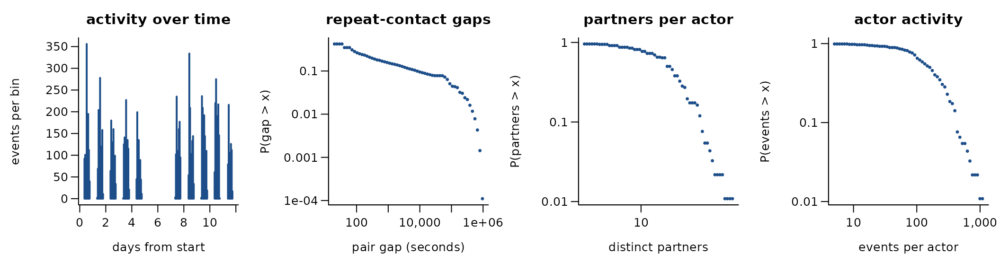
9,827 undirected contacts among 92 actors over 11.4 days (755 distinct pairs). 92.3% of events repeat an earlier pair; if every event chose a pair at random the share would be 61.5%. The burstiness coefficient of the gaps between successive events of the same pair is 0.63 (0 for a Poisson process, positive when events cluster in bursts); the most active tenth of the actors take part in 32.1% of events (Gini 0.45). 27.7% of events share their time stamp with an earlier one. office building, 2013
Get the data
download.file("https://sociopatterns.org/assets/data/workplace_InVS_metadata.txt", "workplace_InVS_metadata.txt", mode = "wb")
download.file("https://sociopatterns.org/assets/data/workplace_InVS_tij.dat.zip", "workplace_InVS_tij.dat.zip", mode = "wb")A reader that turns these files into a
(sender, receiver, time) table is
readers[["sp-workplace-invs13"]] in data-raw/catalogue/readers.R.
SocioPatterns: workplace contacts 2015 (InVS)
Source: https://www.sociopatterns.org/datasets/high-school-contact-and-friendship-networks/ · Licence: CC BY-NC-SA · Status in amorem: non-commercial: not redistributable in amorem (MIT); obtain from the source.
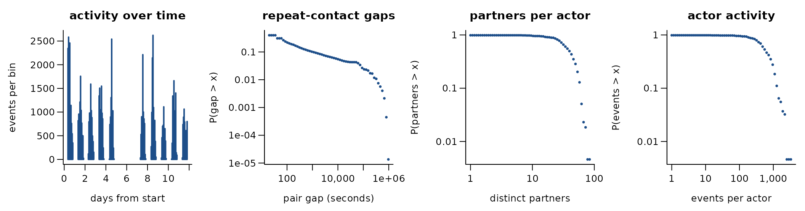
78,249 undirected contacts among 217 actors over 11.5 days (4,274 distinct pairs). 94.5% of events repeat an earlier pair; if every event chose a pair at random the share would be 71.1%. The burstiness coefficient of the gaps between successive events of the same pair is 0.72 (0 for a Poisson process, positive when events cluster in bursts); the most active tenth of the actors take part in 25.6% of events (Gini 0.38). 76.4% of events share their time stamp with an earlier one. office building, 2015
Get the data
download.file("https://sociopatterns.org/assets/data/workplace_InVS15_metadata.txt", "workplace_InVS15_metadata.txt", mode = "wb")
download.file("https://sociopatterns.org/assets/data/workplace_InVS15_tij.dat.gz", "workplace_InVS15_tij.dat.gz", mode = "wb")A reader that turns these files into a
(sender, receiver, time) table is
readers[["sp-workplace-invs15"]] in data-raw/catalogue/readers.R.
SocioPatterns: ACM Hypertext 2009 conference contacts
Source: https://www.sociopatterns.org/datasets/high-school-contact-and-friendship-networks/ · Licence: CC BY-NC-SA · Status in amorem: non-commercial: not redistributable in amorem (MIT); obtain from the source.
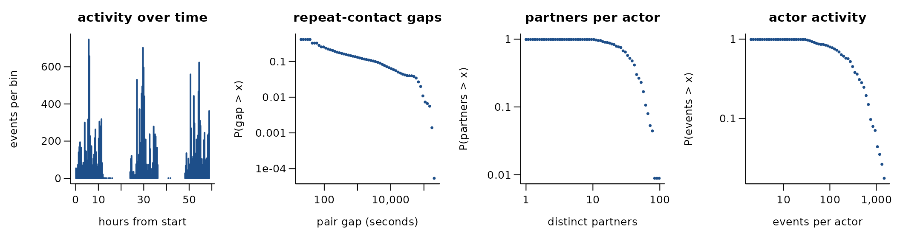
20,818 undirected contacts among 113 actors over 2.5 days (2,196 distinct pairs). 89.5% of events repeat an earlier pair; if every event chose a pair at random the share would be 70.7%. The burstiness coefficient of the gaps between successive events of the same pair is 0.63 (0 for a Poisson process, positive when events cluster in bursts); the most active tenth of the actors take part in 31.1% of events (Gini 0.46). 74.8% of events share their time stamp with an earlier one. ACM Hypertext 2009, three days
Get the data
download.file("https://sociopatterns.org/assets/data/ht2009_contact_intervals.json.gz", "ht2009_contact_intervals.json.gz", mode = "wb")
download.file("https://sociopatterns.org/assets/data/ht2009_contact_list.dat.gz", "ht2009_contact_list.dat.gz", mode = "wb")A reader that turns these files into a
(sender, receiver, time) table is
readers[["sp-ht2009"]] in data-raw/catalogue/readers.R.
SocioPatterns: SFHH conference contacts (Nice)
Source: https://www.sociopatterns.org/datasets/high-school-contact-and-friendship-networks/ · Licence: CC BY-NC-SA · Status in amorem: non-commercial: not redistributable in amorem (MIT); obtain from the source.
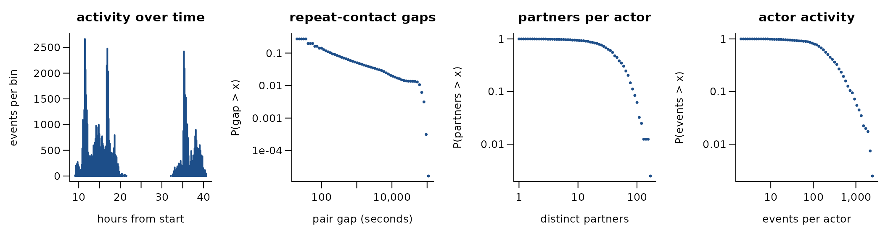
70,261 undirected contacts among 403 actors over 1.3 days (9,565 distinct pairs). 86.4% of events repeat an earlier pair; if every event chose a pair at random the share would be 33.1%. The burstiness coefficient of the gaps between successive events of the same pair is 0.75 (0 for a Poisson process, positive when events cluster in bursts); the most active tenth of the actors take part in 36.7% of events (Gini 0.49). 95.0% of events share their time stamp with an earlier one. time is seconds from an unstated origin
Get the data
download.file("https://sociopatterns.org/assets/data/SFHH_tij.dat.gz", "SFHH_tij.dat.gz", mode = "wb")A reader that turns these files into a
(sender, receiver, time) table is
readers[["sp-sfhh-conference"]] in data-raw/catalogue/readers.R.
SocioPatterns: Infectious exhibition contacts (Dublin)
Source: https://www.sociopatterns.org/datasets/high-school-contact-and-friendship-networks/ · Licence: CC BY-NC-SA · Status in amorem: non-commercial: not redistributable in amorem (MIT); obtain from the source.
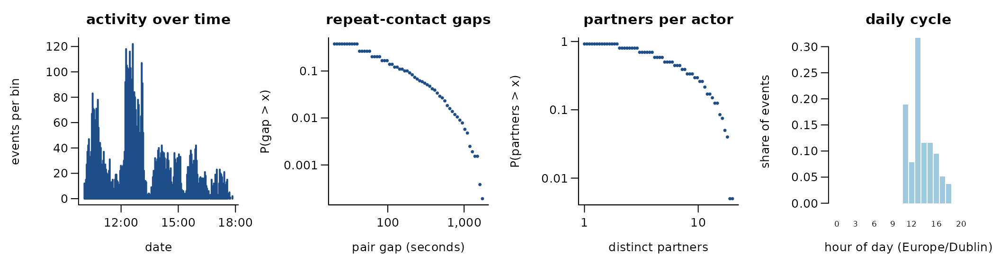
5,943 undirected contacts among 200 actors over 0.3 days (714 distinct pairs). 88.0% of events repeat an earlier pair; if every event chose a pair at random the share would be 13.5%. The burstiness coefficient of the gaps between successive events of the same pair is 0.34 (0 for a Poisson process, positive when events cluster in bursts); the most active tenth of the actors take part in 25.3% of events (Gini 0.41). 79.2% of events share their time stamp with an earlier one. one day of the 69 daily files: listcontacts_2009_04_28.txt
Get the data
download.file("https://sociopatterns.org/assets/data/sciencegallery_infectious_contacts.tgz", "sciencegallery_infectious_contacts.tgz", mode = "wb")A reader that turns these files into a
(sender, receiver, time) table is
readers[["sp-infectious-dublin"]] in data-raw/catalogue/readers.R.
SocioPatterns: village contacts in rural Malawi
Source: https://www.sociopatterns.org/datasets/high-school-contact-and-friendship-networks/ · Licence: CC BY-NC-SA · Status in amorem: non-commercial: not redistributable in amorem (MIT); obtain from the source.
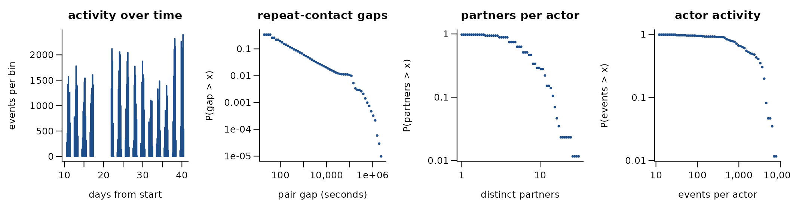
102,293 undirected contacts among 86 actors over 30.0 days (347 distinct pairs). 99.7% of events repeat an earlier pair; if every event chose a pair at random the share would be 96.4%. The burstiness coefficient of the gaps between successive events of the same pair is 0.85 (0 for a Poisson process, positive when events cluster in bursts); the most active tenth of the actors take part in 25.1% of events (Gini 0.43). 57.5% of events share their time stamp with an earlier one. time = day * 86400 + contact_time
Get the data
download.file("https://sociopatterns.org/assets/data/tnet_malawi_pilot.csv.gz", "tnet_malawi_pilot.csv.gz", mode = "wb")A reader that turns these files into a
(sender, receiver, time) table is
readers[["sp-malawi-village"]] in data-raw/catalogue/readers.R.
SocioPatterns: household contacts in rural Kenya
Source: https://www.sociopatterns.org/datasets/high-school-contact-and-friendship-networks/ · Licence: CC BY-NC-SA · Status in amorem: non-commercial: not redistributable in amorem (MIT); obtain from the source.
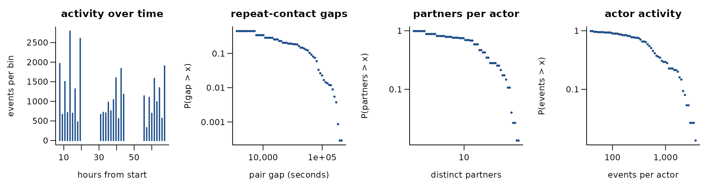
32,425 undirected contacts among 75 actors over 2.5 days (515 distinct pairs). 98.4% of events repeat an earlier pair; if every event chose a pair at random the share would be 91.4%. The burstiness coefficient of the gaps between successive events of the same pair is 0.22 (0 for a Poisson process, positive when events cluster in bursts); the most active tenth of the actors take part in 33.8% of events (Gini 0.50). 99.9% of events share their time stamp with an earlier one. hourly resolution: time = (day - 1) * 86400 + hour * 3600; one row per contact with duration
Get the data
download.file("https://sociopatterns.org/assets/data/scc2034_household_contact_dataset.zip", "scc2034_household_contact_dataset.zip", mode = "wb")
download.file("https://sociopatterns.org/assets/data/scc2034_variables_dictionary.txt", "scc2034_variables_dictionary.txt", mode = "wb")A reader that turns these files into a
(sender, receiver, time) table is
readers[["sp-kenya-households"]] in data-raw/catalogue/readers.R.
SocioPatterns: baboon proximity and observations (Rousset)
Source: https://www.sociopatterns.org/datasets/high-school-contact-and-friendship-networks/ · Licence: CC BY-NC-SA · Status in amorem: non-commercial: not redistributable in amorem (MIT); obtain from the source.
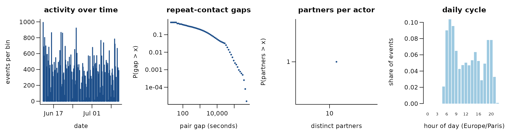
63,095 undirected contacts among 13 actors over 27.7 days (78 distinct pairs). 99.9% of events repeat an earlier pair; if every event chose a pair at random the share would be 99.9%. The burstiness coefficient of the gaps between successive events of the same pair is 0.67 (0 for a Poisson process, positive when events cluster in bursts); the most active tenth of the actors take part in 26.0% of events (Gini 0.24). 35.3% of events share their time stamp with an earlier one. Unix time; Guinea baboons, CNRS primate centre, Rousset, June-July 2019
Get the data
download.file("https://sociopatterns.org/assets/data/baboons_obs_data.txt.gz", "baboons_obs_data.txt.gz", mode = "wb")
download.file("https://sociopatterns.org/assets/data/baboons_proximity_data.txt.gz", "baboons_proximity_data.txt.gz", mode = "wb")A reader that turns these files into a
(sender, receiver, time) table is
readers[["sp-baboons"]] in data-raw/catalogue/readers.R.
Honeybee trophallaxis interactions (Gernat et al. 2018)
Source: https://beemonitoring.igb.illinois.edu/ · Licence: none stated for data (software AGPL-3) · Status in amorem: no licence stated: not redistributed; obtain from the source.
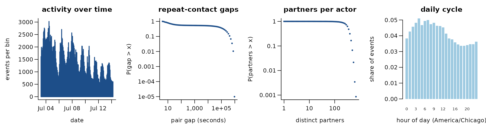
302,221 undirected contacts among 1,164 actors over 11.0 days (200,723 distinct pairs). 33.6% of events repeat an earlier pair; if every event chose a pair at random the share would be 19.3%. The burstiness coefficient of the gaps between successive events of the same pair is 0.20 (0 for a Poisson process, positive when events cluster in bursts); the most active tenth of the actors take part in 17.0% of events (Gini 0.21). trial 1 of 5: trophallaxis contacts, start times
Get the data
download.file("https://beemonitoring.igb.illinois.edu/trial1.zip", "trial1.zip", mode = "wb")
download.file("https://beemonitoring.igb.illinois.edu/trial2.zip", "trial2.zip", mode = "wb")
download.file("https://beemonitoring.igb.illinois.edu/trial3.zip", "trial3.zip", mode = "wb")
download.file("https://beemonitoring.igb.illinois.edu/trial4.zip", "trial4.zip", mode = "wb")
download.file("https://beemonitoring.igb.illinois.edu/trial5.zip", "trial5.zip", mode = "wb")A reader that turns these files into a
(sender, receiver, time) table is
readers[["honeybee-trophallaxis-gernat2018"]] in data-raw/catalogue/readers.R.
KONECT: Haggle device contacts
Source: http://konect.cc/ · Licence: unknown (site unreachable 2026-10-17) · Status in amorem: no licence stated: not redistributed; obtain from the source.
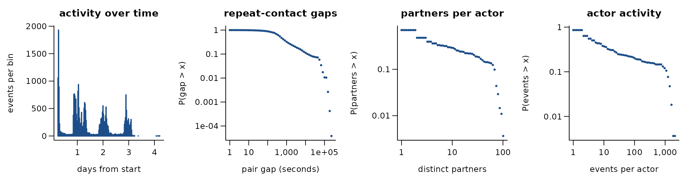
28,244 undirected contacts among 274 actors over 4.0 days (2,124 distinct pairs). 92.5% of events repeat an earlier pair; if every event chose a pair at random the share would be 29.8%. The burstiness coefficient of the gaps between successive events of the same pair is 0.50 (0 for a Poisson process, positive when events cluster in bursts); the most active tenth of the actors take part in 70.7% of events (Gini 0.84). 44.5% of events share their time stamp with an earlier one. Bluetooth device contacts, Infocom 2005
Get the data
download.file("http://konect.cc/files/download.tsv.contact.tar.bz2", "download.tsv.contact.tar.bz2", mode = "wb")A reader that turns these files into a
(sender, receiver, time) table is
readers[["konect-haggle"]] in data-raw/catalogue/readers.R.